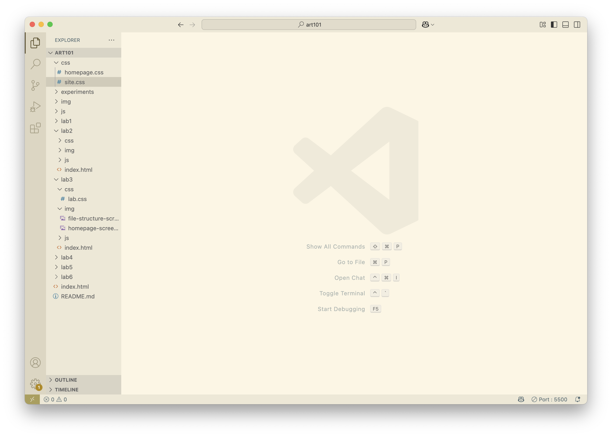
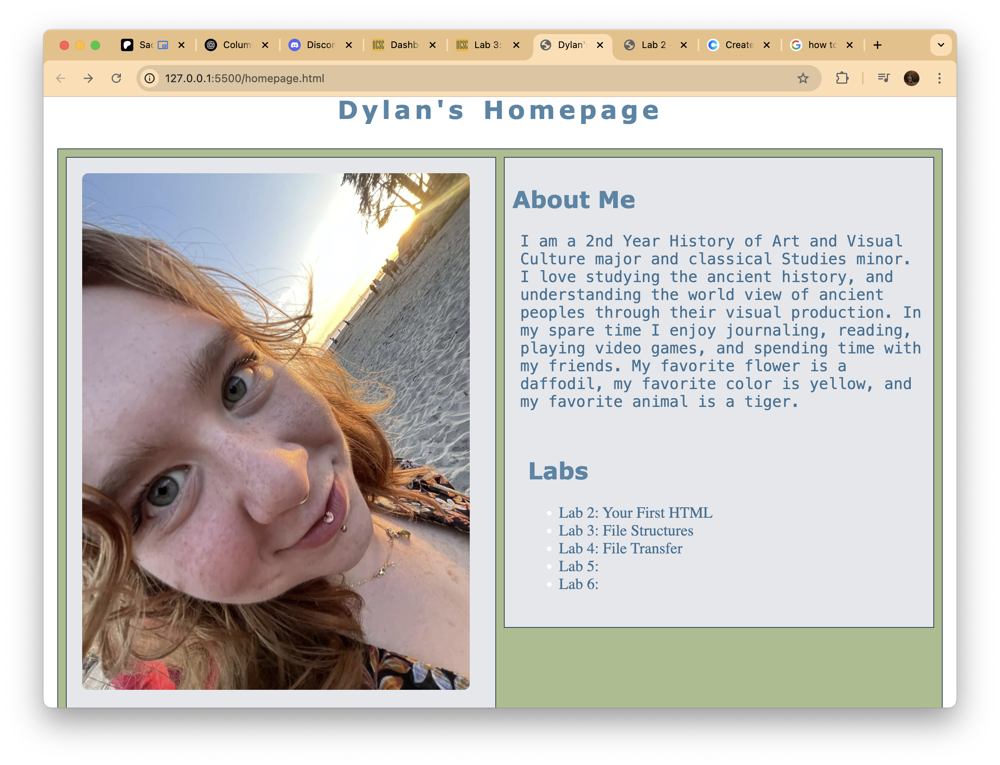

Lab 3 - File Structures
Challenge
Redesign the homepage for our websites, create file structures, and learn how to link and reference to other files when coding.
Problems
The coding and file structures were fairly easy, I did not run into any problems regarding that. At times I got frustrated with the CSS, but that was due to my overcomplication of the process.
Reflection
I tried to perfect the layout and design of my homepage, but ended up getting myself in over my head with the CSS. I had to take a stepback and realise that I am a beginner at coding, and won't be able to do all I wish immediately.
Results
This page is the result of the work I did during this lab, below is a screenshot of my file structure:
This lab also included designing our homepages. If you're on this page you've probably already seen it, but here is a screenshot for good measure:
Here is the HTML that shows how I made this page, as well as how I made my homepage